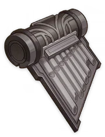
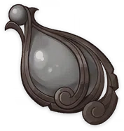

Fragment of an Ancient Chord
Weapon Ascension Material.
A harp with rotten keys. Its voice blocked, it cannot be
played nor its sound heard.
It is said the descendants of the forgotten music once
lacquered mechanical wooden harps with gold in order to
revive the magnificent remnants of the ancient dynasty,
futilely attempting to match them to the silent golems...
A long time passed, and then more, and the rotten, off-key
harps remained in the grasp of those silent giants,
caressed by the waves, playing only sorrowful strains.
Chapter of an Ancient Chord


Weapon Ascension Material.
Legends say that the survivors of that ancient dynasty once
cast a harp out of black iron to commemorate and mourn.
A harp cast of black iron cannot be played. To mourn that
ancient dynasty that was once so proud of its golden music,
those remaining forged this heavy instrument and its yet
weightier silence.
But no matter what, the black iron harp remained as silent
as that lost era.
Movement of an Ancient Chord
Weapon Ascension Material.
In that great disaster, the golden palace sank with its
throne, the music was shattered, the notes turned to
silence...
But the remnants of that empire never gave up their desire
for salvation and to surpass fate.
To save their waning civilization and their desire to
transcend, the Golden Troupe played melodies most wondrous,
enticing children to offer their precious souls to the
sleeping golems.
Echo of an Ancient Chord
Weapon Ascension Material.
The God King's Grand Symphony is composed of countless
melodies linked together, but its main thesis is submerged
under the common destiny of the Water Nation.
The harmonies of those carefree years and sonatas were once
the greatest representation of civilization and order, but
when the prosperous empire descended into a playground for
tyrants, the brutal despots tore the connection with the
source asunder under the cover of golden cloaks, and
discord finally swarmed through the empire—
The original song of fate continued to ring out on a score
of fading gold, unperturbed by all... until all was
dissolved, and all returned to chaos.
Dross of Pure Sacred Dewdrop
Weapon Ascension Material.
Legends say that before the birth of life, there was a
dense primordial sea. It is the purest origin of all
things, and one day, it will also swallow all life... and
those things which did not arise from it will be filtered
out, becoming naught but floating detritus.
"The existence of detritus also has meaning — What kind of
thing would be rejected by the source of all things that
swallows all life?" the young Harmost asked the great
usurper, pondering this conundrum.
Sublimation of Pure Sacred Dewdrop

Weapon Ascension Material.
"Life that came from the primordial sea is inevitably fated
to return to it." Thus spoke the Harmost Boethius. "But
there are infinite possibilities for humans to transcend,
and even the waters of the primordial sea cannot completely
dissolve them..."
The arrogant usurper once attempted to mix insoluble Ichor
with pure water, to contain wisdom and memories, allowing
his subjects and servants to discard their physical bodies,
and obtain independent, eternal lives.
But the pain of severing soul and body cannot be endured by
any ordinary life, and the usurper's order tore apart and
shattered souls...
The Ichor was dyed black by the crying and howling of so
many souls, and it lost its harmony and wisdom, leaving
only chaos and madness.
Spring of Pure Sacred Dewdrop
Weapon Ascension Material.
This is a relic from a time when the Lochknights still
roamed — the knights said, there were still loyal spirits
in the mountain springs and valleys where none tread,
guarding those pure, unpolluted springs...
However, the creator of artificial Ichor couldn't tolerate
any discord in his great symphony. It is said that wherever
the Harmost Boethius went, the natural nectar was buried,
the aqueducts of the empire were built, and the spirits
born of pure water vanished without a trace...
Essence of Pure Sacred Dewdrop


Weapon Ascension Material.
A dense and pure solution, derived and refined from drops
of the vast primordial sea. The ancient God King once
believed it would bring eternal life and infinite wisdom,
but listening carefully— it was quietly, faintly
prophesizing the final end of all dissolving into one.
T his was once the God King's unfinished Grand Symphony — a
boundless, sourceless golden Ichor replacing the wild
primeval waters, and the glorious immortal sages bringing
nectar-like enlightenment to the ignorant corners of the
world.
But the God King's delusions ultimately sank into the
depths of the black abyss, and with the ravages of time,
the golden Ichor was eventually corroded by the primordial
soup...
The tuner turned a blind eye to the evil omens, and
supporting his broken body, continued to give life to his
compatriots according to the plans once laid, so that the
old order might one day return...
Even today, many mad poets and painters of Fontaine see the
apocalypse experienced by Boethius, a reminder of the
inescapable cycle of the world.
Broken Goblet of the Pristine Sea
Weapon Ascension Material.
Legend says that when the first usurper came to the
primordial sea, the first sovereign gave him a goblet of
water.
Later, he became the unquestioned god-king, and used this
goblet of water to refine the mysterious drops of dew,
establishing a splendid and powerful empire.
But that is now an ancient story, whose main characters now
sleep in the phosphorescence of the schools of the
deepwater fish.
Wine Goblet of the Pristine Sea
Weapon Ascension Material.
What kind of empire can last for a thousand years? After
returning from the kingdom of dragons, the usurper once
pondered this question.
Combining the immortal stone with the Ichor essence
extracted from primordial water, and carved into a race as
black as iron — with arcane lithos for skin and Ichor for
blood, never again fearing the curse of returning to the
primeval past...
The silent golem still dreams the dream of the empire — not
knowing it has been over a thousand years since the
empire's obliteration.
Silver Goblet of the Pristine Sea
Weapon Ascension Material.
In the years when the golden shroud covered the land, pure
spring water had to be hidden away in concealed mountain
streams, and the Lochknights were born in these
sanctuaries.
The knights swear by armor of silver, to protect the
spirits born from pure water, to protect their fellows who
also keep faith in the one true font, resisting the
omnipresent golden power that blotted out the sky and
outshone the sun.
But that is an ancient legend... Not long after the empire
collapsed and sank, the knights who resisted the usurper
shed their armor, and their stories were hidden in a
tangled web of stories and ballads.
Golden Goblet of the Pristine Sea
Weapon Ascension Material.
When the Usurper of the sunken city played the last
movement of the golden symphony, the favored musician stole
the golden goblet brimming with Ichor.
Shocked by the foolhardy betrayal of the God King, the
musician summoned the last guards, and used the insoluble
Ichor to seal the dragon beneath the tall tower, and sank
into the abyss with the capital.
Afterwards, this noble thief vanished silently from
history, and only the "Golden Troupe" faithfully remembers
his prophecy.